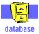
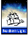

|
By Merry Burlingham, University of Texas March 2000 As more and more publishers, journal aggregators, vendors, and societies/associations, etc. establish a presence on the Internet, they use technology (i.e., alerting or TOC notices) to promote products and services directly to end users. Signing up for various notification services can benefit faculty and students with well-defined interests, whether scholarly or recreational, and also promote use of a library’s full text materials and general collections. Encouraging incoming graduate students and new faculty to try such services eases them into the use of different online systems. The following list is an initial effort to identify sites with utility for South Asian Studies and is adapted from an outreach presentation. Comments and/or additions should be directed to Merry Burlingham (merry@mail.utexas.edu) AAUP (American Association of University Presses) New Releases [http://aaup.uchicago.edu/new_releases/] Select specific subject areas, including Asian Studies, and receive notices of new titles published by numerous university presses as the volumes are released. Each subject can be searched at the same page to review titles from the past few weeks. Asia Bulletin from the Asia Society’s online resource, Asia Source [ http://www.asiasource.org/ bulletins/profilemain.cfm] Create a profile for e-mail notification of news, Web pages, books, etc. identified by staff of the Asia Society. Asian Studies WWW Monitor [ http://coombs.anu.edu.au/asia-www-monitor.html] Daily announcements with evaluation of new Asian resources on the web, distributed by Matthew Ciolek. Many announcements are included in H-ASIA postings, but instructions for subscriptions are given at the URL above. Site includes a searchable archive. Cambridge University Press journals [ http://www.journals.cup.org/cup/html/nm_intro.htm]: Select titles such as Modern Asian Studies and receive tables-of-contents by e-mail. Some libraries have access to full text of CUP journals, although they require an individual logon; most titles begin full text in 1998 or 1999.  Contents First: If your institution uses OCLC FirstSearch, this database can be searched by journal title and subject to view tables-of-contents by individual issue; it includes approx. 13,000 journal titles. Try this if a specific title doesn’t seem to be included in any other TOC service.  Northern Light Search Alert Service [ http://standard.northernlight.com/cgi-bin/cl_alert.pl] Will send e-mail notification of Web pages or Special Collection documents added to their online collections. The Alert service is free, but using/retrieving some documents may incur costs. Oxford University press Journals [ http://www3.oup.co.uk/jnls/tocmail/] Select titles such as the SOAS Bulletin and receive tables-of-contents by e-mail. Some libraries have access to the full text of OUP journals, although not all titles are yet available online. SARA: Scholarly Articles Research Alerting [ http://www.catchword.co.uk/sara] SARA allows choice by title or subject. Catchword, the journal aggregator, also provides a TOCs service for additional publishers. Choices include title, publisher, subject, or LC classification. Their alternate URL is: http://figaro.catchword.com/cl=38/vl=79888361/nw=1/rpsv/cw/web/nw1/tocalert.htm Sage Publications Contents Alert [ http://www.sagepub.co.uk/] Although the major South Asia-related titles published in India are not yet available through the Sage site, other journals of subject/multidisciplinary interest are. The list should be updated as new titles are added. Scout Report Signpost [ http://www.signpost.org/signpost/] Searchable archive of annotated Web resources as well as access by subject and Library of Congress classification. Weekly updates can be received by e-mail [ http://scout.cs.wisc.edu/misc/subscribe.html]. Even though Asia-related sites are not the primary focus, many of the resources can be useful in the context of Asian Studies or individual disciplines. UnCover Reveal [ http://uncweb.carl.org/reveal/index.html]: UnCover Reveal delivers tables-of-contents for individual journals and notification of journal articles or new books for specified subjects to an e-mail address. You can set up an individual account for $25 per year if your institution does not have a site license. This service uses TOCs input for CARL UnCover. [Since UnCover was recently purchased by Ingenta, there may be changes to the TOCs service as well as direct links to full text articles if a library is using Ingenta to access specific titles.] If there are specific journals or publishers where you expect relevant material to appear, check the publisher’s web page to see whether alert services or any type of notification service is provided. One of the main sites for publisher information is AcqWeb's Directory of Publishers and Vendors [ http://www.library.vanderbilt.edu/law/acqs/pubr.html]. Back to the top |